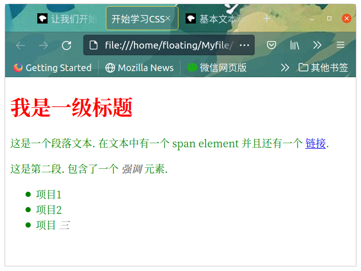

CSS 开始
本文按照 Mozilla 贡献者基于 CC-BY-SA 2.5 协议发布的以下文章改编:
- https://developer.mozilla.org/zh-CN/docs/Learn/CSS/First_steps/What_is_CSS
- https://developer.mozilla.org/zh-CN/docs/Learn/CSS/First_steps/Getting_started
经过前一章，我们了解了 CSS 大抵是什么东西。现在就要正式用上 CSS 了。
在这篇文章中，我们将会拿一个简单的 HTML 文档做例子，并且在上边使用 CSS 样式，期待你能在此过程中学会更多有关 CSS 的实战性知识。
先从 HTML 开始
这里是一个平平无奇的 HTML：
1 |
|
我们将会以这个为例子开始讲解 CSS。
嵌入 CSS
要想让 CSS 应用在 HTML 当中，就需要在其中嵌入 CSS。一共有三种方法可以嵌入 CSS：外部 CSS，内部 CSS，内联 CSS。目前我们最普遍的方式——外部 CSS 来进行演示。
在与之前所说的 HTML 的相同目录下创建一个文件，保存并命名为 styles.css 。然后在HTML 的 <head> 当中加入这一行:
1 | <link rel="stylesheet" href="styles.css"> |
这样就可以将 HTML 和 CSS 文件链接起来。属性 rel="stylesheet" 表示要链接的是 CSS 文件，href 指定了文件名称。一定要注意的是，这里用来指定文件名的是 href 标签，而不是 src，两者是有区别的。但是你可以把CSS文件放在其他地方，并调整指定的路径以匹配。
接下来就可以在 styles.css 文件里面指定样式了。前面已经讲过，我们通过指定元素选择器以及附加的规则来格式化 HTML 当中的元素。所以这里就直接开始了。
比如我们现在可以把下面的内容写进去：
1 | h1 { |
它把大标题设置成红色，把段落和列表里面的字设置成绿色，再把强调元素设置成灰色粗体。具体效果可以看下面的图片：

另外，如果之前已经在浏览器里面打开了 HTML 的话，修改之后要保存，然后在浏览器里面刷新才能看到变化。这里是怕大家忘了。
元素默认样式
对于每个 HTML ，如果没有 CSS 或者 CSS 没有指定的地方，浏览器都会采用默认样式进行渲染，比如那些标题都是粗体，链接是蓝色带下划线之类。
如果你不是很满意那些东西，可以用选择器选中它们，再指定一个规则去掉它。比如一个 ul 的 li 前面会带上一个点，现在我们可以去掉通过这个规则去掉它。
1 | li { |
对其他元素的默认样式也可以采用类似的方式进行去除或者覆盖。
使用类名
到现在我们都是采用选择器来指定一个元素。但是如果想要对一些元素起作用，比如一些 <p> 变成红色，另一些 <p> 变成紫色，怎么办？
答案是使用类名（class）。你可以给 HTML 元素来指定类名，再让 CSS 选择器用类名进行选择。下面是一个例子：
1 | <ul> |
这里给项目二指定了一个 class="special" 。在 CSS 中选中它，需要在选择器开头加上一个英文句点（.），就像这样：
1 | .special { |
把 special 类的元素设置成橙色粗体。一个类名可以在不止一中元素上面使用，比方说我们给一些 <p> 加上 class="special" 之后，这些 <p> 也会变成橙色粗体。是不是非常方便。
有时候你会看见这样的东西：
1 | li.special { |
这里就是指定所有类为 special 的 li 元素，不会影响其他的 special 类的元素。可以用来给某些特殊元素处理。
使用 ID
你也可以使用 ID 来选择指定的元素，使用 # 开头，类似类名选择器。例如有这么一个 HTML 片段：
1 | <span id="identified">Here's a span with some text.</span> |
要想选中它，就可以这么做：
1 | #identified { |
和类名不同的是，一个 ID 是只能给一个标签用的。
根据元素在文档中的位置确定样式
有时候希望某些内容根据它在文档中的位置而有所不同。这里有很多选择器可以提供帮助，但现在我们只介绍几个选择器。比方说现在我们的文档中有两个 <em> 元素 ——一个在段落内，另一个在列表项内。如果只想选择嵌套在 <li> 元素内的 <em> 我们可以使用一个称为包含选择符的选择器，它只是单纯地在两个选择器之间加上一个空格。CSS 长这样：
1 | li em { |
现在，我们把包含在 <li> 当中的 <em> 变成了紫色，而其他地方的 <em> 都不```面的所有 <em> 起作用，这包括下面的例子：
1 | <li>LALALA<span>LALAL<em>LSA</em>JFOIU</span>AWJFLIKAHSOIDafs </li> |
如果你想要根据严格的父子关系来选择，可以采用子代选择器，这个符号是一个 >，写出来的选择器就是 li > em。这样就不会选出套在 <span> 里面的 <em> 了。
另外我们也可以让两个同级别元素排在一起的时候再选中，需要在两个选择器之间添加一个 + 号 (成为 相邻选择符) 。这里是一个例子：
1 | h1 + p { |
当 h1 和 p 相邻的时候，就把 p 的字体放大到 200% ( h1 不变)。
根据状态确定样式
我们平时在浏览网页的时候，把鼠标停在某个链接上面，那个链接就会变颜色。这是通过选中不同状态来进行的。当我们修改一个链接的样式时，我们需要选中 <a> 标签。这个标签有着不同的状态，比如说是否是未访问的、访问过的、被鼠标悬停的、被键盘定位的，亦或是正在被点击当中等等。你可以使用 CSS 去选中这些不同的状态，然后分别进行修饰。比如说下面的 CSS 代码使得没有被访问的链接颜色变为粉色、访问过的链接变为绿色。
1 | a:link { |
你也可以改变链接被鼠标悬停的时候的样式，例如移除下划线：
1 | a:hover { |
将多种选择器混合使用
有时候你想去搞一些很复杂的功能，那就可能会需要混合使用多种选择器。
比如把包含和并列选择器一块用：
1 | /* 选择在 <article> 中的 <p> 中的 <span>。 */ |
或者像这样把一堆选择器混在一起。
1 | /*在 <body> 之内，紧接在 <h1> 后面的 <p> 元素的内部，类名为 special 。*/ |
这里 /* */ 包裹起来的内容是 CSS 注释，浏览器会自动忽略这些，写注释是给自己或者其他能看到这个 CSS 的人看的，记下一些比较复杂的东西，免得以后忘记了是吧。
总结
这里我们知道了怎么链接 CSS ，以及如何添加选择器来作用特定的元素。在教程的剩下部分，我们将继续这个话题。你现在已经可以在 MDN 文档中查找属性和值，并且根据这个给文本指定简单的样式。
在下一节中，我们将看到样式表的结构是什么样的。
练习
给下面的 HTML 添加以下的样式，需要写出什么规则？
1 | </head> |
在 HTML 同目录下新建一个叫做 styles.css 的文件，你可以往里面写样式。
- 把
h1设置成蓝紫色(blueviolet)。 - 把 “red” 设置成红色。
- 把 “blue” 设置成蓝色。
- 把 “line 32” 和 “Unexpected ‘{‘ “ 字体大小设置成
1.2em。(后代选择器) - 把 “line 32” 设置成红色，但是不影响 “Unexpected ‘{‘ “ 。(子代选择器)
- 把鼠标悬停在 “red” 字样上面的时候，文字颜色变成蓝色。(根据状态选择)
- 把和
h1相邻的第一个p的背景色设置成黄绿色(yellowgreen)。(相邻元素选择)
这些都是本章提到的内容，自己动手试试看，有利于掌握。